3.Amino acids and peptides
Return to IntroductionPrevious:2.Biomolecules
Next:4.Protein Structure and Function
3.1.Amino Acids and Proteins
Protein refers to a class of complex organic macromolecular compounds that are essential for maintaining life activities; It is composed of 20 kinds of α amino acids through dehydration and condensation, which can contain one or more peptide chains, and has functional diversity and structural stability.
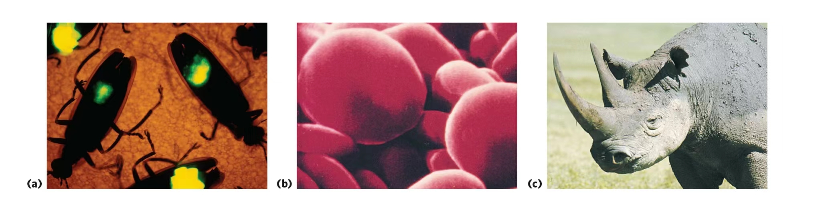
Protein is one of the most abundant and important biological macromolecules in living systems, and is abundant in prokaryotic cells, eukaryotic cells, cell walls, cell membranes, and organelles. The types, structures, and functions of proteins vary from oligopeptides ，such as oxytocin (9 peptides), to multi-subunit polymers. The simple peptide chain structure (primary structure) is the structural basis of the protein, and then rises to the spacious level (secondary, tertiary, and quaternary structure) to form the complex protein higher order structure through non-covalent forces.
The basic structural components that make up proteins (peptide chains) are amino acids. There are 20 kinds of amino acids in the common protein, and of course there are rare amino acids1, non-protein amino acids2. Through different permutations and combinations, amino acids form proteins with different biological functions, such as enzymes (catalytic function), carrier proteins (transport function), antibodies (immune function), peptide hormones (regulatory function), and so on
3.2.Physical Properties of Amino Acids
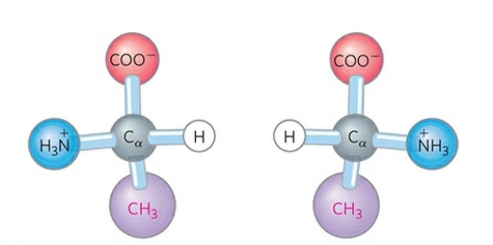
Amino acid refers to a class that contains both -COOH and -NH2 organic molecules are collectively referred to. Proteins (polypeptide chains) are polymers formed by dehydration and condensation between amino acids, and adjacent amino acids are connected by peptide bonds.
It is worth mentioning that in old textbooks, there are 20 types of amino acids that make up proteins. In fact, it has been discovered that selenocysteine and pyrroletyrosine are the 21st and 22nd natural protein amino acids.
| abbreviation | Chinese | PK1(α-COOH) | PK2(α-NH2) | PKR | PI |
|---|---|---|---|---|---|
| Polar negatively charged amino acids | |||||
| Asp（D） | aspartic acid | 1.88 | 9.60 | 3.65（β-COOH） | 2.77 |
| Glu（E） | glutamic acid | 2.19 | 9.67 | 4.25（γ-COOH） | 3.22 |
| Polar positively charged amino acids | |||||
| Arg（R） | arginine | 2.17 | 9.04 | 12.48(Guanidine) | 10.76 |
| Lys（K） | lysine | 2.18 | 8.95 | 10.53（ε-NH2） | 9.47 |
| His（H） | histidine | 1.82 | 9.17 | 6.00 (imidazolyl) | 7.59 |
| Polar uncharged amino acids | |||||
| Asn（N） | asparagine | 2.02 | 8.80 | 5.41 | |
| Gln（Q） | glutamine | 2.17 | 9.13 | 5.65 | |
| Thr（T） | threonine | 2.11 | 9.62 | 5.87 | |
| Ser（S） | serine | 2.21 | 9.15 | 5.68 | |
| Tyr（Y） | tyrosine | 2.20 | 9.11 | 10.07 (phenol-OH) | 5.66 |
| Cys（C） | cysteine | 1.96 | 10.28 | 8.18(Mercapto-SH) | 5.07 |
| Non-polar uncharged amino acids | 5.89 | ||||
| Leu（L） | leucine | 2.36 | 9.60 | 5.98 | |
| Ile（I） | isoleucine | 2.36 | 9.68 | 6.02 | |
| Val（V） | valine | 2.32 | 9.62 | 5.97 | |
| Phe（F） | phenylalanine | 1.83 | 9.13 | 5.48 | |
| Trp（W） | tryptophan | 2.38 | 9.39 | ||
| Met（M） | methionine | 2.28 | 9.21 | 5.75 | |
| Pro（P） | proline | 1.99 | 10.96 | 6.48 | |
| Somewhere between polar and non-polar | |||||
| Gly（G） | glycine | 2.34 | 9.60 | 5.97 | |
| Ala（A） | alanine | 2.34 | 9.69 | 6.02 |
The 20 amino acids found in natural proteins are all α-amino acids, which α means that the free amino group and the free carboxyl group are linked to a Cα. Cα There is also an H and an R group (the position of the R group of Gly is an H), and the size, structure, and electrical properties of the R group largely determine the different properties between amino acids.
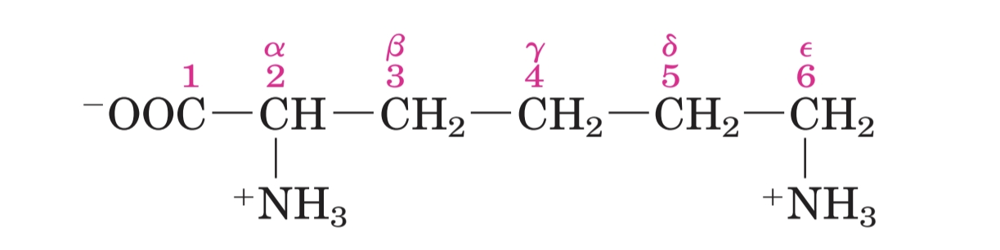
As mentioned above, the R group of Gly is an H, so all natural proteins have chiral carbon C* except Gly3, all of which are L-type (L、D-type and left-handed and right-handed have no relationship), and some D-type amino acids are present in some antibiotics and short peptide tail of peptidoglycan in the cell wall of bacteria
Amino acids are small molecules with an average molecular weight of 128 Da, but the average molecular weight of amino acid residues in proteins is 110 Da due to the dehydration and condensation of synthetic peptide chains
Amino acids are colorless crystals with high melting points and are mostly zwitterionic in solution or crystals
Soluble in water, dilute acid, dilute alkali, insoluble in organic solvents, so it can be extracted through ethanol precipitation (the same is true for nucleic acid extraction).
Different amino acids have different tastes, for example, monosodium glutamate is monosodium glutamate, so glutamic acid has umami taste
3.3.Classification of Amino Acids
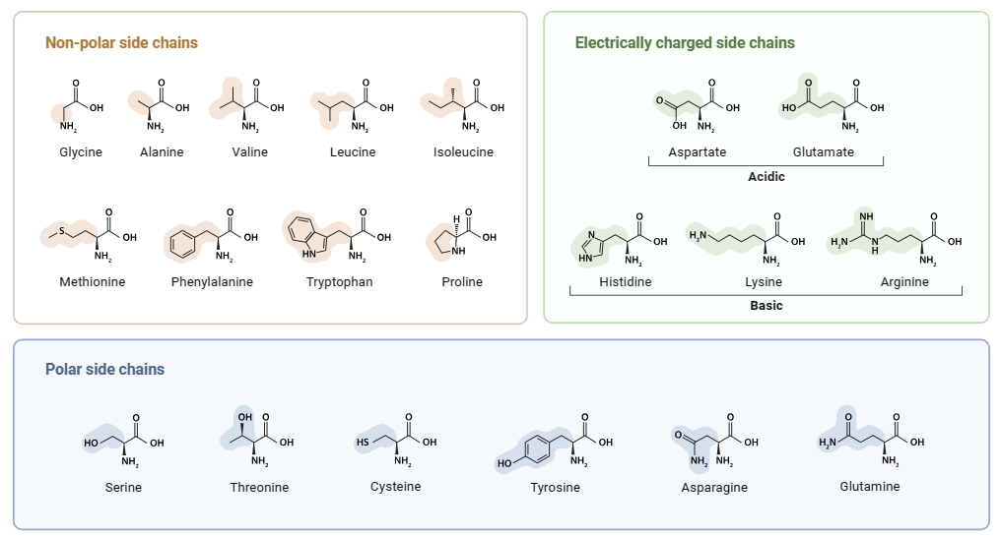
3.3.1.According to the different classification of R groups
(1) Aromatic amino acids
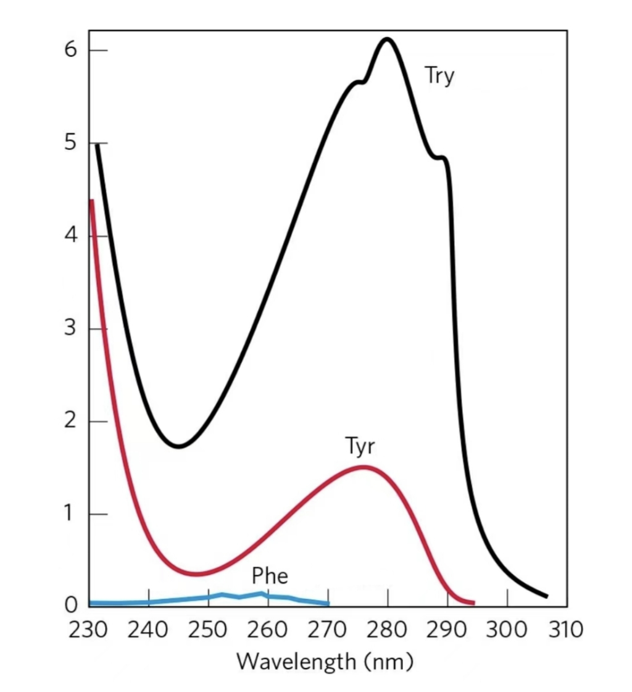
Phe, Tyr, Trp all have aromatic side chains
Ultraviolet absorption: Among the 20 protein amino acids, only aromatic amino acids have ultraviolet absorption, where Phe has the maximum OD257, Tyr has the maximum OD275, Trp has the maximum OD280。 The light absorption of Phe is smaller than that of Tyr and Trp, so it does not contribute much to the light absorption of proteins
Because most proteins contain the above three amino acids, proteins have the property of ultraviolet light absorption at 280nm, which is an important method for protein quantitative detection (colorimetric method)
(2) Heterocyclic amino acids
His and Pro are heterocyclic amino acids, where Pro is a heterocyclic amino acid
(3) Aliphatic amino acids
The other 15 amino acids
3.3.2.According to the nature of the R group
Polarity = Hydrophilic = Soluble in water
Non-polar = hydrophobic = insoluble in water
(1) Polar negatively charged amino acids
Acidic amino acids (acidic aa) refers to molecules containing one amino group and two carboxyl groups at the same time, pI is much smaller than physiological pH, and the physiological pH is negatively charged
The second carboxyl group of Asp is β-COOH and the second carboxyl group of Glu is γ-COOH
(2) Polar positively charged amino acids
Basic amino acids (basic aa) refers to molecules containing both a carboxyl group and multiple amino groups in the molecule, pI is much larger than the physiological pH, and the physiological pH is positively charged
Arg contains two amino groups, two imino groups, and the guanidine group is positively charged; Lys contains two amino groups, the other being ε-NH2； His contains one amino group and one imino group, and the imidazole group is positively charged
(3) Polar uncharged amino acids
The polarity of Ser, Thr, Tyr is provided by -OH
The polarity of Asn and Gln is provided by the amide group; Asn and Gln are easily acidolyzed or alkalinized to synthesize Asp and Glu, respectively
The polarity of Cys is provided by sulfhydryl(-SH), and the two Cys are connected by -SH to form disulfide bonds, which form cystine; Disulfide bonds play an important role in maintaining protein conformation, and the more disulfide bonds, the more stable the protein structure
(4) Non-polar amino acids
The R groups of these amino acids are all non-polar (hydrophobic).
The polarity of Ala and Gly is small enough to be between polar and nonpolar
Ile, Leu, and Val are collectively known as branched-chain amino acids
Phe and Trp belong to the aromatic amino acids
Met is a sulfur-containing amino acid, and another sulfur-containing amino acid is Cys
3.3.3.According to the degree of needs of the body
(1) Essential amino acids
Essential amino acids that are necessary for the body's growth and metabolism, but need to be obtained from food because they cannot be synthesized by themselves.
- Ile、Met、Val、Leu、Trp、Phe、Thr、Lys
(2) Semi-essential amino acids
Semi-essential amino acids that cannot be synthesized by the zombie body only under special circumstances and need to be obtained from food.
- Arg、His
(3) Non-essential amino acids
Non-essential amino acids can be metabolized and synthesized by the zombie body without additional intake.
- 10 other kinds
3.3.4.According to whether the protein is constituted or not, it is not distinguished
(1) Standard protein amino acids
20 α-amino acids
(2) Non-protein amino acids
It refers to the rare amino acids derived from 20 kinds of standard protein amino acids, most of which are not used as synthetic components of proteins, but participate in other metabolisms of the body in a free or bound state.
- Hydroxy Pro（HyPro）, Hydroxy Lys（HyLys）, Selenocysteine, Pyrrole Tyrosine, Ornithine（Orn）, Citrulline（Cit）, D-Alanine, Taurine, Theanine, β-Alanine, etc.
- Among them, ornithine and citrulline are important intermediates in the urea cycle.
3.4.Amphoteric dissociation of amino acids
3.4.1.Acid-base behavior of amino acids
Amphoteric dissociation of amino acids amino acid molecules contain dissociable α-amino groups, α-carboxyl groups and partially dissociable R groups, so dissociation occurs in different pH solutions, which can make amino acids net positively charged, negatively charged, or in a facultative ionic state with a net charge of 0. Amino acids are amphoteric molecules, so proteins are also amphoteric molecules.
Dipolarion refers to a molecule with amphoteric dissociation attributes, when the degree of dissociation of positive and negative charges is the same, the net charge is 0, the molecule is in a state, at this time the molecule can be used as both a proton donor and a proton acceptor.
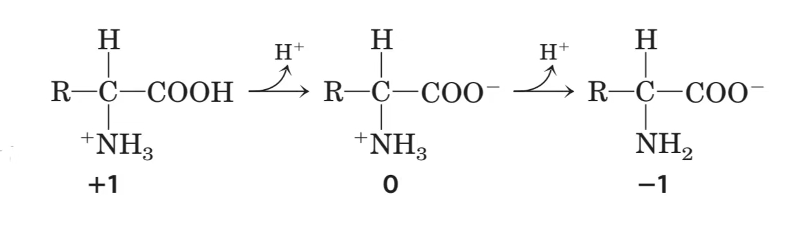
Isoelectric point refers to the pH of the solution when the amphoteric molecules dissociate the positive and negative charges to the same extent in a certain pH solution, that is, when the net charge is 0, the solubility of the molecules is the smallest and does not move in the electric field. When the pH of the solution is much smaller than the pI, the amino acids are fully protonated, and the -COOH and -NH3+ after complete protonation can release protons; When the pH of the solution is much greater than the pI, the amino acids are completely deprotonated, at which -COO- and -NH2 can accept protons.
3.4.2.Titration curves of amino acids
To be clear, the state of complete dissociation of -COOH is -COO-, α-NH3+ is α-NH2
(Ⅰ) Titration curve of R-based non-dissociated amino acids
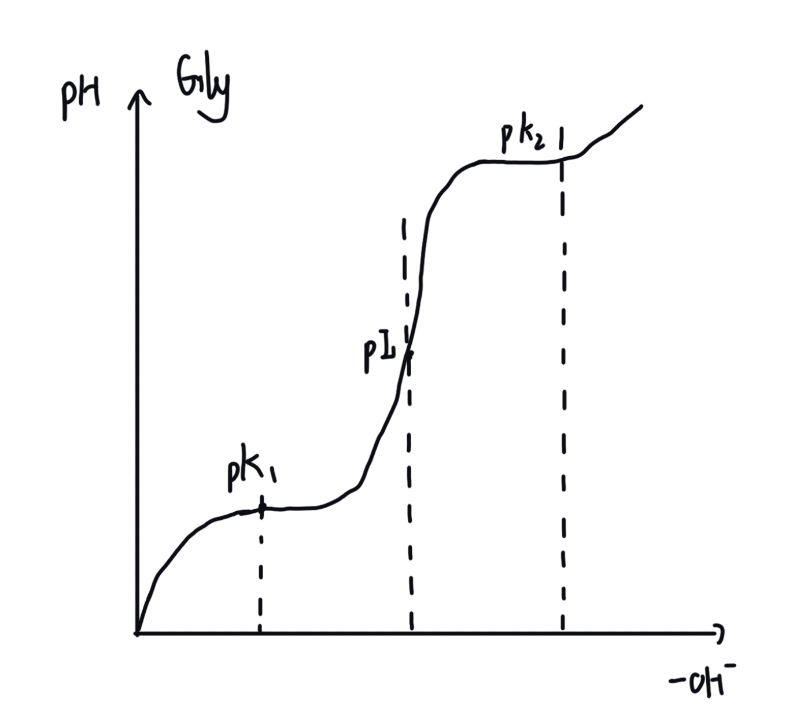
Acid-base titration is essentially the process of gradually increasing or decreasing protons. The figure shows the titration curve of Gly
When the pH is very low, The dominant ionic state in Gly is +H3N-CH2-COOH, which is in a fully protonated state with a net charge of +1； pH reaches the dissociation equilibrium point of α-COOH pK1, α-COOH dissociates half, at which point is the same moore's +H3N-CH2- COOH and +H3N-CH2- COO- coexistence state with a net charge of +0.5, at which point the curve has its first turn; When the pH continues to rise, equal to pI, the curve has a second turn, and -COOH is completely dissociated, the dominant ionic state is +H3N-CH2-COO-, net charge is 0, reaches pI; The pH continues to rise, reaching α-NH3+, the dissociation equilibrium point pK2, α-NH3+ dissociate half, at which point is the same moore's H2N-CH2- COO- and +H3N-CH2- COO- coexistence state with a net charge of -0.5, at which point there is a third turn in the curve; When the pH is very high,The dominant ionic state in Gly is H2N-CH2-COO-, at the state of complete deprotonation, has a net charge of -1
The analysis curve shows two regions of flatness, which correspond to the half-dissociation points of α-COOH and α-NH2 groups. At these points, the pH remains relatively stable even with the addition or removal of acid, indicating that the amino acid has buffering capacity. However, at the physiological pH of blood (≈ 7), Gly clearly lacks buffering capacity.
(Ⅱ) Titration curves of R-based dissociable amino acids
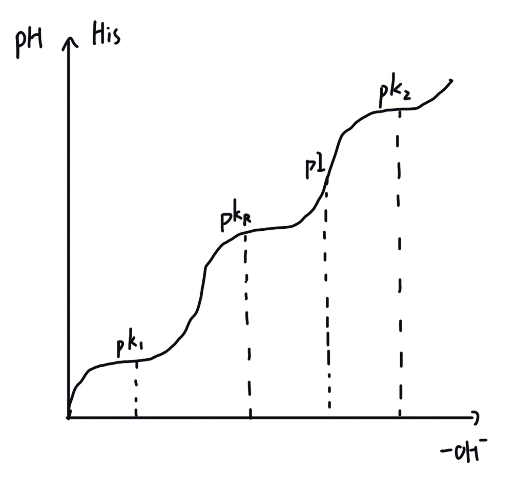
The figure shows the titration curve of His, which represents the titration process of a series of R-group dissociable amino acids
His contains one amino group and one imino group. When the pH is very low and fully protonated, the net charge of His is +2. When the pH gradually increases, -COOH is the first to completely dissociate, and the net charge is +1. Therefore, only the R-group (imidazolyl) is completely dissociated, the pI of His can only be reached before α-NH3+ dissociation begins
His contains imidazolyl, imidazolyl's pKR(=6.00) is closest to physiological pH, so in the blood of physiological pH, His has buffering capacity, so there is often an enzyme activity center and participates in acid-base catalysis (mentioned in the enzyme chapter).
(Ⅲ) Calculation of isoelectric points
The acidic amino acid, which is fully protonated, has a net charge of +1, so it can only be net charged to 0 if the α-COOH is completely dissociated and the R group is not dissociated

Basic amino acids have a net charge of +2 when fully protonated, thus only when α-COOH and R group are fully dissociated, and α-NH3+ remains undissociated, can the net charge be 0.
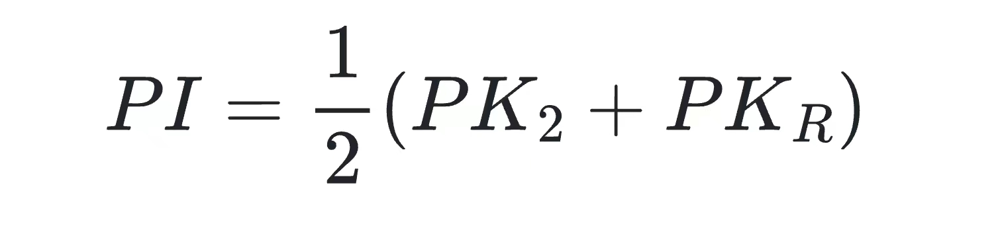
Neutral amino acids have a net charge of 0 only when α-COOH is fully dissociated and α-NH3+ remains undissociated.
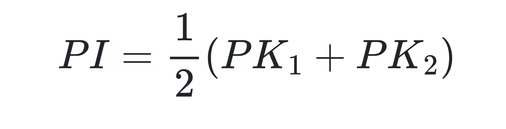
3.5.Chemical reactions of amino acids
3.5.1.Reactions involving α-NH2
Sanger (DNFB) Method
Reaction of 2,4-dinitrofluorobenzene with the N-terminal amino acid of the peptide chain forms DNP-peptide. Subsequent acid hydrolysis breaks the peptide bond, yielding numerous amino acids and a yellow DNP-Aa, which is then identified by chromatography to determine the type of amino acid.
Edman (PITC) Method
Reaction of phenyl isothiocyanate with the N-terminal amino acid of the peptide chain forms PTC-peptide. After acid hydrolysis, the peptide bond between the N-terminal PTC-Aa and the peptide is cleaved, resulting in a PTC-amino acid and a peptide with one fewer amino acid. The former is identified by chromatographic separation, while the latter enters the next round of the Edman cycle.
Free α-NH2 reacts with aldehydes to produce Schiff bases.
3.5.2.Reactions involving α-COOH
- Esterification: Reaction of alcohol with acid to form an ester.
- Salt formation: Reaction of base with acid to form a salt.
- Acid chloride formation: -COOH reacts with PCl5 (phosphorus pentachloride) or SOCl2 (thionyl chloride) to form the corresponding acid chloride.
3.5.3.Reactions involving α-NH2 and α-COOH
- Peptide bond formation: Dehydration condensation between the α-NH2 and α-COOH of adjacent amino acids forms a peptide bond. Protonated -COOH and deprotonated NH2 are required for peptide bond formation.
- Ninhydrin reaction: Ninhydrin and α-amino acids are heated together in a weakly acidic environment, promoting deamination and decarboxylation of the amino acid. The released ammonia reacts with one molecule of reduced ninhydrin to form a blue-purple substance with a maximum OD570, or directly reacts with (hydroxy) proline without deamination, forming a yellow substance with a maximum OD440. This is an important method for quantitative determination of amino acids.
3.5.4.Reactions involving R groups
1. Phenyl group: Reacts with concentrated nitric acid to produce a yellow substance.
2. Thiol group (Cys)
For thiol enzymes, exposure to alkylating agents or heavy metal ions that can disrupt the thiol -SH group leads to enzyme inactivation. Therefore, reducing agents such as GSH act as enzyme protectants or activators.
Transition from -S-S- to -SH:
- Reduction: β-mercaptoethanol, dithiothreitol, reduced glutathione (GSH)
- Oxidation: Formic acid
Destruction of thiol groups:
- Alkylation: Iodoacetic acid, iodoacetamide, p-chloromercuribenzoic acid
- Reaction with heavy metal ions
- Reaction with organic mercury, organic arsenic
3. Guanidino group (Arg): Reacts with α-naphthol and hypobromite to produce a red substance (the Sakaguchi reaction).
4. Phenolic hydroxyl group (Tyr)
- Reacts with diazonium compounds to synthesize an orange substance (the Pauly reaction).
- Reacts with nitric acid, mercuric nitrate, etc., to synthesize a red substance (the Millon's reaction).
- Reacts with the molybdenum blue or tungsten blue in Folin-phenol reagent to synthesize blue phosphomolybdate or phosphotungstate salts.
5. Indole group (Trp)
- Reacts with acetic aldehyde, concentrated sulfuric acid to produce a red substance (the acetic aldehyde reaction).
- Reacts with the molybdenum blue or tungsten blue in Folin-phenol reagent to synthesize blue phosphomolybdate or phosphotungstate salts.
6. Imidazole group
- Reacts with diazonium compounds to synthesize a red-brown substance (the Pauly reaction).
3.6.Peptides and Peptide Bonds
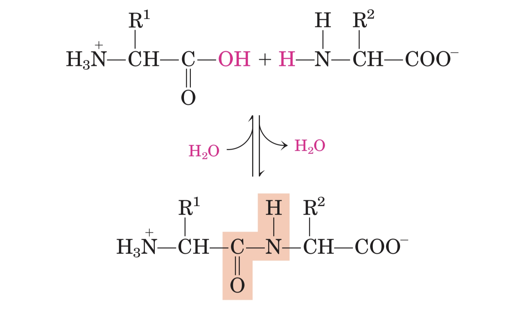
After the polymerization of amino acids, the resulting polymer is called a polypeptide. A single polypeptide or several interacting polypeptides can form a protein.
Peptide bond In a polypeptide chain, it refers to the covalent bond formed by the dehydration condensation between the α-COOH of one amino acid and the α-NH2 of its adjacent amino acid.
Characteristics of the peptide bond:
- The C-N bond exhibits properties intermediate between a double bond and a single bond, having partial double bond characteristics. It is not freely rotatable, shorter than a single bond, and longer than a double bond. Therefore, only the N-H, Cα-N, and Cα-C bonds in a peptide plane can rotate.
- The majority of peptide bonds are in the trans configuration (as shown in the figure), while only the peptide bonds formed between Proline and other amino acids have a small probability (1/10) of being in the cis configuration.
- Peptide bonds are catalyzed by 23s rRNA (in prokaryotes) during the translation process.
Peptide plane It refers to the rigid plane formed by the four atoms that make up the peptide bond and the two adjacent Cα atoms. This plane cannot rotate internally, but rotation is possible between planes, leading to different configurations of the peptide chain.
After dehydration condensation of amino acids, they are referred to as amino acid residues. The number of amino acid residues (peptide bond count + 1) determines the classification as a peptide. A chain with fewer than 20 residues is generally referred to as an oligopeptide, while those with more than 20 residues are called polypeptides.

Peptide unit refers to the basic unit of a peptide chain, which consists of the four atoms involved in the peptide bond and the two adjacent Cα atoms. Two peptide units (one peptide bond) form a dipeptide, and so on. Therefore, the peptide unit can be considered equivalent to the peptide plane. As shown in the figure, a clear carbon skeleton can be observed: Cα-C-N-Cα-C-N-Cα-C...
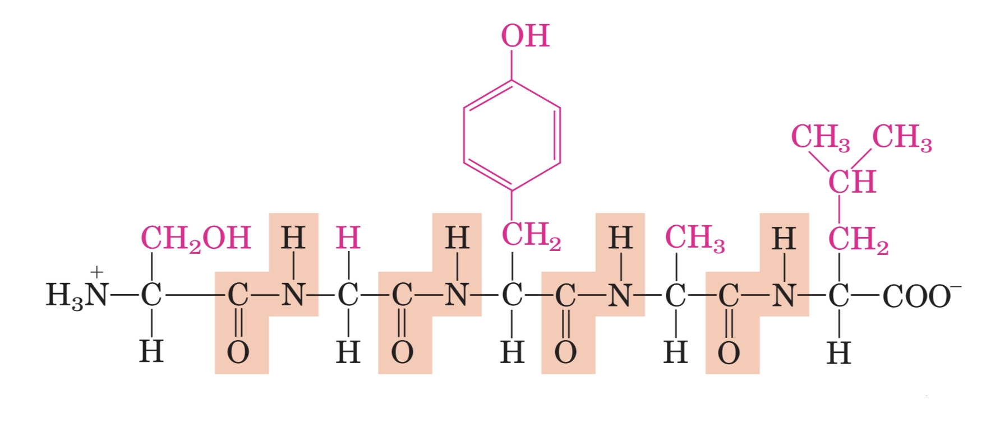
The two ends of a polypeptide chain are the free -COOH (carboxyl) group end and the free -NH2 (amino) group end:
- Writing and reading direction of a peptide chain: N-terminal -> C-terminal
- Synthesis (translation) direction of a peptide chain in the body: N-terminal -> C-terminal
- Direction of artificial synthesis of a peptide chain outside the body: C-terminal -> N-terminal
3.7.Other Molecular Forces
The peptide bond mentioned earlier is a covalent bond, and in addition to that, there are four types of non-covalent bonds and disulfide bonds present in proteins.
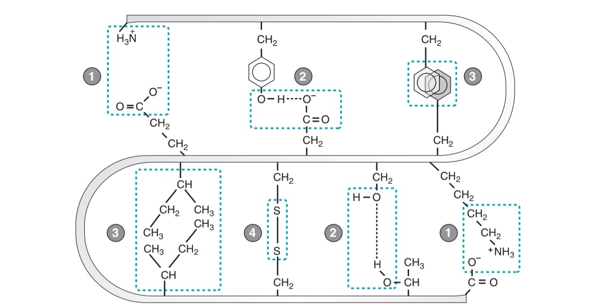
(1) Ionic bond: Refers to the electrostatic attraction between groups carrying opposite charges, and it is a non-covalent bond.
(2) Hydrogen bond: Refers to the mutual attraction between highly electronegative N or O atoms and H-N or H-O bonds.
- It is a non-covalent bond that stabilizes the secondary structure.
- It is directional and saturable.
- Disruption methods: urea, guanidine hydrochloride.
(3) Hydrophobic force: Refers to the force where hydrophobic groups avoid the aqueous environment and tend to aggregate.
- It is the most important non-covalent force in maintaining the stability of the tertiary and quaternary structures.
- Disruption method: SDS.
(4) Disulfide bond: Refers to the covalent bond formed between two different cysteine residues within the same or different peptide chains, which contributes to the stability of protein structure.
Disruption of disulfide bonds can occur through:
- Reduction: beta-mercaptoethanol, dithiothreitol, reduced form of glutathione (GSH).
- Oxidation: performic acid.
(unlabeled) Van der Waals forces: The weakest intermolecular force among the four non-covalent forces.
3.8.Active peptides and Polypeptides
Active peptides Refers to oligopeptides and polypeptides that have biological activity and can regulate physiological metabolic activities.
- GSH (Glutathione): A tripeptide formed by the condensation of Glu, Cys, and Gly, with a hydrogen bond between the γ-COOH of Glu and the α-NH2 of Cys. It is a natural antioxidant in the body due to the presence of a free and easily oxidizable -SH group. It protects the reduction of sulfhydryl groups and the reduction of hemoglobin Fe2+.
- Oxytocin: A nonapeptide that promotes uterine contractions and milk secretion.
- Vasopressin: A nonapeptide that increases blood pressure (Oxytocin and vasopressin are both nonapeptides, but they differ in the amino acids at positions 3 and 8, resulting in distinct functions).
- Enkephalin: Produced in the nervous system, it is used for analgesia.
- Thaumatin: A dipeptide, it is an artificial sweetener.
- Streptomycin: Essentially a peptide antibiotic, it inhibits transcription by binding to DNA.
Most of the active peptides introduced in the previous section are oligopeptides or small polypeptides, and their lengths generally do not exceed 50 amino acid residues. How long can the polypeptide chain of a protein be? The lengths of polypeptide chains in different proteins vary: for example, insulin contains an A chain with 30 residues and a B chain with 21 residues, and these two chains are connected by disulfide bonds (not non-covalent bonds, so insulin is a monomeric protein). In 1965, Chinese scientists first artificially synthesized crystalline bovine insulin. On the other hand, zombie cytochrome C (Cyt C) contains a polypeptide chain with 104 residues, ribonuclease A (RNase A) contains a polypeptide chain with 124 residues, and zombie hemoglobin (Hb) contains four subunits, totaling 574 residues. These examples illustrate the diversity in the size and structure of proteins. Detailed explanations of protein structures will be provided in Section 2: Protein Structure and Function.
Due to the different physiological functions and properties of amino acids in proteins, the composition of the 20 amino acids varies in different proteins. For example, hemoglobin contains a large amount of His in its primary structure, and a certain amino acid may only appear once in a particular protein. On average, the relative molecular mass (Mr) of the 20 amino acids is 138. However, due to the dehydration condensation required for peptide bond formation, the average relative molecular mass of amino acids in proteins is approximately 128-18=110 Da.
3.9.Basic Characteristics of Proteins
Elemental Composition: Proteins are composed of C, O, N, H, and small amounts of S, with S being a characteristic element (distinguishing it from nucleic acids, which contain P). Proteins share the common feature of containing an average of 16% nitrogen, which forms the basis for calculating nitrogen content using the Kjeldahl method.
Protein Coefficient: Since proteins contain an average of 16% nitrogen, 1g of nitrogen represents 6.25g of protein. This coefficient is referred to as the protein coefficient.
Nitrogen Content × 6.25 = Protein Content
Colloidal Nature: Proteins are colloidal molecules with sizes ranging from 1-100nm, falling within the range of colloidal particle sizes. As a result, proteins exhibit the Tyndall effect, Brownian motion, and cannot pass through semi-permeable membranes. The stability of protein solutions as stable hydrophilic colloids is attributed to two factors:
- Hydration Layer: The surface of protein molecules contains a large number of hydrophilic groups, which can adsorb water molecules to form a hydration layer. This prevents protein molecules from colliding and aggregating during movement, thereby increasing the solubility of protein solutions and enhancing stability.
- Double Layer: The surface of protein molecules contains a large number of dissociable groups. In a solution at a specific pH, protein molecules will dissociate into ions with the same charge, attracting counterions in the solution to form a double layer. Based on the principle of repulsion between like charges, this prevents proteins from colliding and aggregating, thereby increasing the solubility and stability of protein solutions.
Therefore, when the hydration layer and double layer are disrupted, proteins are more likely to precipitate.
Amphiprotic Nature: Polypeptide chains contain ionizable α-NH2, α-COOH, and R groups. For short peptides, the electrostatic properties of the molecule depend mainly on α-NH2, α-COOH, and R groups. However, for large polypeptide or protein molecules, because α-NH2 and α-COOH are far apart and have weak electrostatic attraction, the pKa of -COOH is slightly larger than that of free amino acids, and the pKa of -NH2 is slightly smaller, so the dissociated groups are mainly R groups. Therefore, in solutions at different pH levels, protein molecules can undergo varying degrees of dissociation, resulting in a net positive charge, net negative charge, or becoming electrically neutral in the form of amphoteric ions.
- Proteins with a higher content of basic amino acids have a pI > 7, while those with a higher content of acidic amino acids have a pI < 7.
- Factors affecting the isoelectric point of a protein: amino acid composition, ionic strength of the solution, temperature, etc.
- Plasma dots: The pH at which a protein is uncharged in an ion-free solution. The plasma dots is a characteristic constant of a protein, rather than pI.
UV Absorption: Almost all proteins contain aromatic amino acids, resulting in maximum absorption at OD280, and the absorbance within a certain range is directly proportional to the protein content. Therefore, UV absorption is one of the methods used to measure protein content.
3.10.Composition and Classification of Proteins
3.10.1.Classification based on shape
Globular proteins refers to a class of proteins that are approximately spherical or elliptical in shape.
- Hydrophilic amino acids are mostly exposed on the outer surface, while hydrophobic amino acids are mostly buried inside the molecule, making them highly water-soluble.
- They are composed of various secondary structures and have a clearer hierarchy of structure.
- Most enzymes and functional proteins in cells belong to globular proteins.
Fibrous proteins refers to a class of proteins that are approximately elongated or rod-shaped in structure.
- They are less water-soluble compared to globular proteins.
- They often function as structural proteins, providing support and protection in organisms. Examples include alpha-keratin, fibroin, elastin, and collagen.
- They are mostly composed of a single type of secondary structure, such as alpha-helices in alpha-keratin and beta-sheets in fibroin.
Membrane proteins refer tp proteins that are associated with various membrane systems (plasma membrane + internal membranes) of cells, including peripheral proteins, integral membrane proteins, and anchored proteins.
3.10.2.Classification based on composition
Simple proteins: Refers to proteins that are composed solely of amino acids.
- Examples include globulins, albumins (transport fatty acids), histones, protamines, glutenins, scleroproteins, lysozyme, ribonuclease A (RNase A), etc.
Conjugated proteins: Refers to proteins that, in addition to amino acids, also contain prosthetic groups or ligands. The portion of the protein without the prosthetic group or ligand is called the apoprotein.
| Type | Examples |
|---|---|
| Glycoproteins | Collagen, membrane proteins, transferrin, immunoglobulins, interferons, thrombin |
| Lipoproteins | CM, VLDL (very low-density lipoprotein), LDL (low-density lipoprotein), HDL (high-density lipoprotein) |
| Phosphoproteins | Glycogen phosphorylase, casein |
| Nucleoproteins | DNP (DNA + protein), RNP (RNA + protein) |
| Hemoproteins | Hemoglobin, myoglobin, cytochromes, catalase |
| Flavoproteins | Succinate dehydrogenase (FADH2), dihydrolipoyl dehydrogenase (FADH2), acyl-CoA dehydrogenase (FADH2), NADH dehydrogenase (NADH) |
| Metalloproteins | Alcohol dehydrogenase, carboxypeptidase (Zn2+), pyruvate carboxylase (Mn2+), alpha-amylase (Ca2+), nitrogenase (Mo, Fe) |
3.10.3.Classification based on structure
Monomeric proteins: Refers to proteins that consist of a single polypeptide chain or subunit.
- Examples include lysozyme, myoglobin (Mb), ribonuclease A (RNase A), insulin, etc.
Oligomeric proteins: Refers to proteins that contain multiple subunits, which are held together by non-covalent bonds.
- There are four types of non-covalent bonds: hydrophobic interactions, hydrogen bonds, ionic bonds, and van der Waals forces. Although insulin has two peptide chains, they are connected by disulfide bonds (covalent bonds). Therefore, the two peptide chains can be considered as one subunit, making insulin a monomeric protein.
- The molecular weight of an amino acid residue in a protein is 110 Da, so it can be calculated by dividing the molecular weight of the protein by 110 to obtain the number of amino acid residues. This calculation only applies to monomeric proteins.
- Examples include hemoglobin and most functional proteins and enzymes.